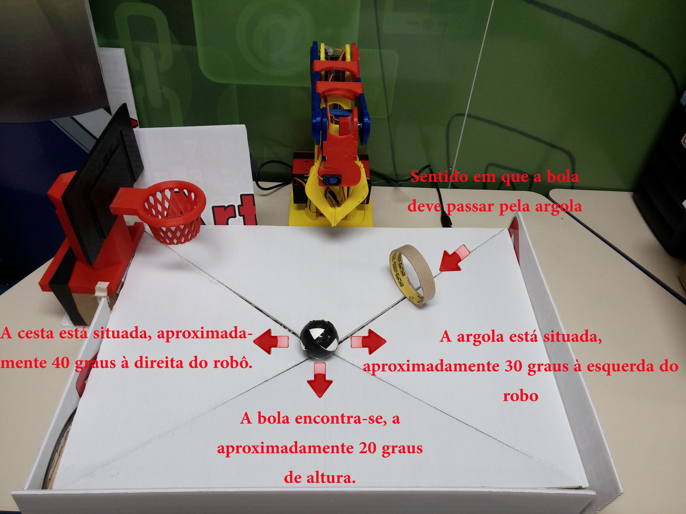
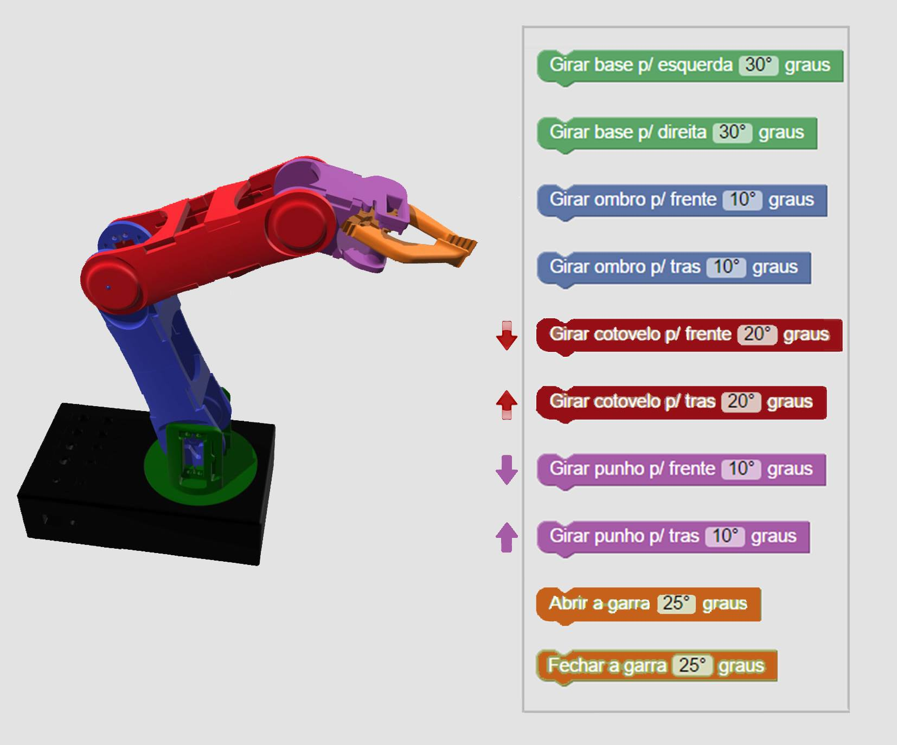

<md-dialog aria-label="Imagens">
  <form ng-cloak>
    <md-dialog-content ng-switch="$ctrl.image">
      
      
    </md-dialog-content>
    <md-dialog-actions layout="row">
      <span flex></span>
      <md-button ng-click="$ctrl.fechar()">
        Fechar
      </md-button>
    </md-dialog-actions>
  </form>
</md-dialog>
